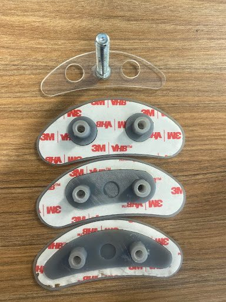
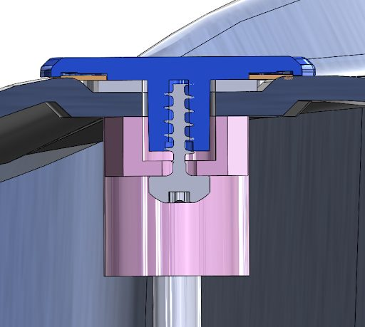
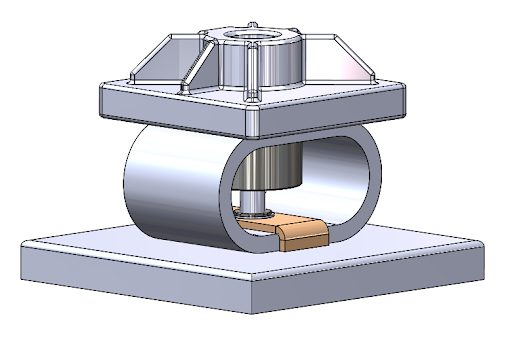
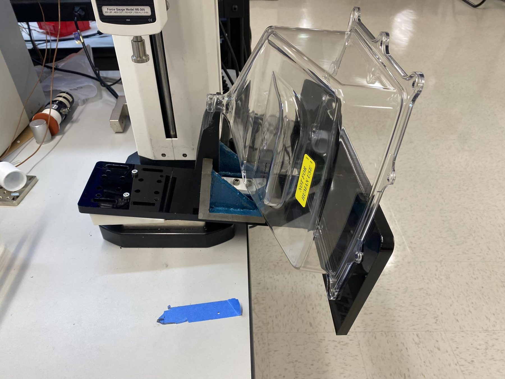
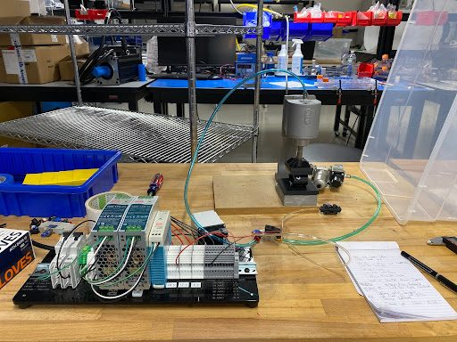
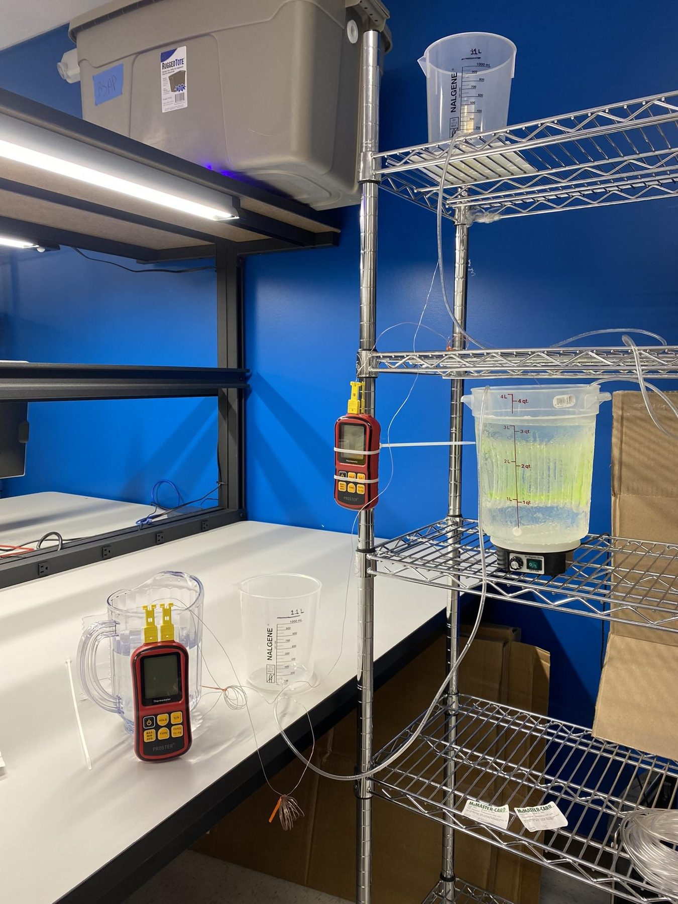

Through-bolt wear pad & sealing tape
Prototyped three concepts, ran design selection, then designed an injection-molded wear pad and sealing tape for a through-bolted assembly. I iterated on fit, sealing and manufacturability, designed the threaded bosses to molding constraints, made the drawings, and worked with vendors on quoting and production.


Rubber bumper compression testing
The bumpers act as a cart's suspension. I ran spring-rate tests with a Mark-10 force gauge across fresh-out-of-box, high-temperature, high-temperature-and-humidity, and 10,000-cycle lifetime conditions (on a cycle fixture I helped build), then processed the data and presented it to the client to judge field viability.



Quarter-turn nut tools
Designed modular tool prototypes for installing and removing quarter-turn nuts on bulkhead connections, gave four variants to technicians, iterated on their feedback, and delivered two final tool sets to the client.
Valve break & leak test
Built a rig (angled mount and reservoir plate) that pairs a leak sensor with the Mark-10 to find the force that causes a critical leak in blood-reservoir ball valves, then tested several reservoirs and valves for the client.







Blood heat-exchanger study
Concept project: chill 1 L of blood from room temperature to near freezing within 10 minutes. I set up a pressure-driven flow through tubing coiled in an ice bath, logged volumes and thermocouple temperatures every 15 seconds, and compared tube diameter, wall thickness, flow rate and agitation against a control using an efficiency metric. The results went to upper management and fed a custom model.




Portfolio slides
The full slide deck from my internship, approved for my portfolio.